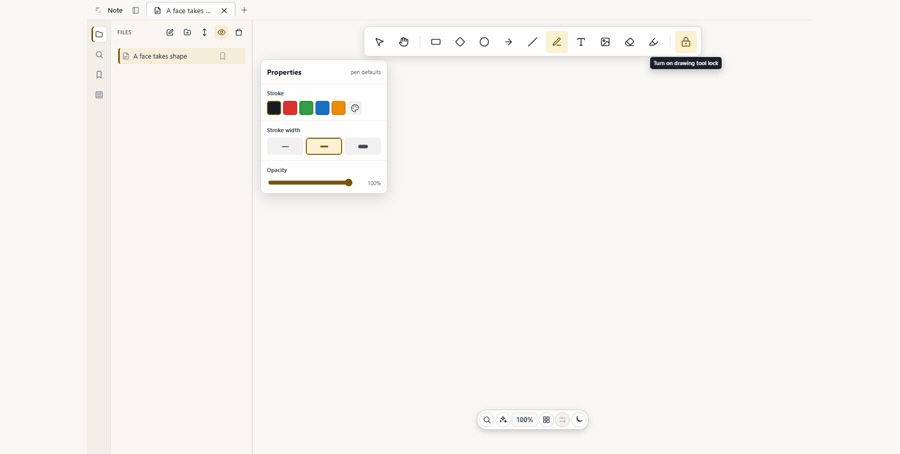

Windows
Install Note for the current user with the NSIS installer.
Download Note-Setup.exeA local-first desktop workspace
Note is a freeform canvas for pages, text, images, and drawing elements—kept on your device, not behind a login.
Current builds are unsigned. Verify the GitHub release before opening one.

Get started
Every release includes checksums. Download only from the official GitHub release.
Install Note for the current user with the NSIS installer.
Download Note-Setup.exeOpen the disk image and move Note to Applications.
Download Note.dmgInstall the Debian package with your package installer or apt.
Download Note.deb
Some Linux releases also include an AppImage. It is optional because
AppImage packaging is not reliable on every hosted CI run. Check the
latest release files
for Note.AppImage.
First use
Note stores workspace data locally in its application-data directory. There is no cloud sync or automatic backup, so keep your own backup before clearing app data or moving devices.